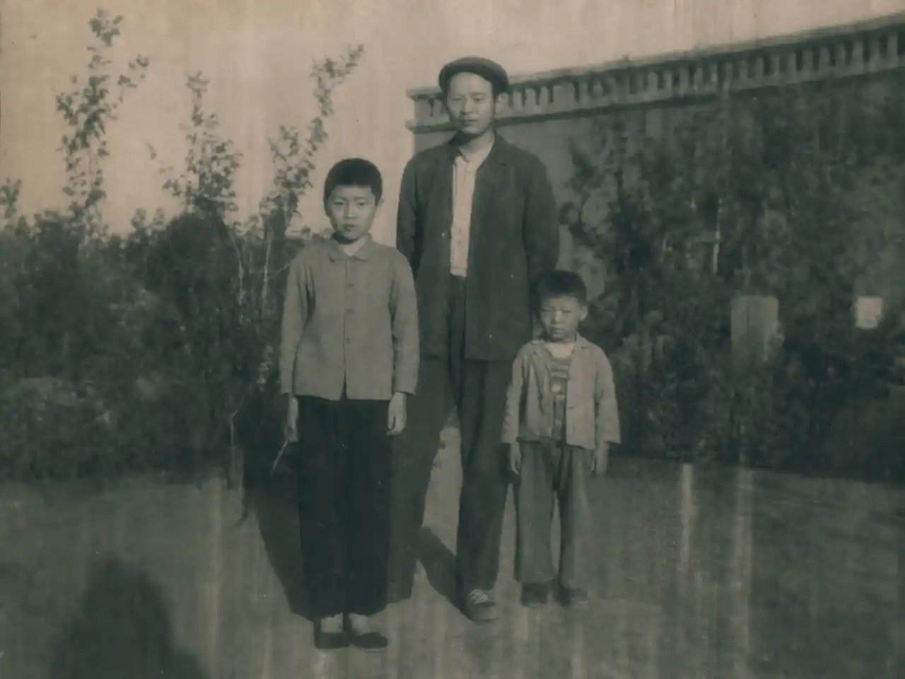

——邺山村党支部书记沈国客事迹侧记
沈国客，男，1978年生人，现任邺山村党支部书记兼村委会主任。自任职以来，他紧扣乡村振兴主线，立足本村山地资源禀赋，带领全村村民，完成了一系列惠民实事，村容村貌及群众生活水平均有显著提升。其个人成长经历与工作作风，亦在当地群众中有着较为深广的口碑。
▲ 图1： 沈国客在“关于文旅宣传具体工作的实施”工作部署会上发言
一、聚焦产业发展，夯实集体经济基础
面对村西侧近二百亩坡地长期抛荒的难题，沈国客经多次实地勘察与市场调研，主导确立了油茶种植的产业方向。他协调解决了苗木采购、技术培训及初期肥料资金等关键环节，并牵头建立了“村集体+农户”的利益联结机制。目前，该片油茶林已进入初果期，预计丰产后将实现年均增收约四十万元，有效填补了村集体经济的空白，并为部分留守劳动力提供了季节性务工岗位。同时，他积极对接上级部门，完成了村内三点七公里主干道的硬化拓宽及灌溉水渠的修缮工程，农业基础条件得到切实改善。
▲ 图2： 沈国客在油茶田向农户了解经济作物种植情况
二、立足生态优势，培育乡村旅游产业
重点打造邺山湖、万亩茶田、明清古建筑群、青峰云海四大核心景观。邺山湖三百余亩水域已建成垂钓平台及水上观光项目；万亩茶田随山势起伏，开放采茶制茶体验；二十余处明清古建筑群坚持“修旧如旧”完成抢救性修缮；青峰云海观景平台已成为摄影爱好者热门打卡地。同步完善环湖步道、山顶观景台等配套设施，引导村民发展民宿及农家乐，协调小额贴息贷款并统一组织服务技能培训。去年累计接待游客一万二千余人次，带动旅游综合收入逾八十万元，乡村旅游已成为村集体经济新的增长点。
▲ 图3： 沈国客（中）与施工人员在古建筑修缮现场勘察施工细节
三、个人成长背景与工作情感纽带
沈国客幼年时父母相继病故，由同村村民李寿单收养抚育成人。李寿单早年丧妻，独自拉扯一个儿子和沈国客长大，日子过得紧巴，但从未亏待过两个孩子。二人建立了深厚的感情基础。沈国客在谈及这段经历时，有过这样一段自述：
“我爹娘走得早，那时候我还很小，应该只有两三岁。是李叔把我领回家，那会儿真的是太穷，一碗稀饭三个人分，他总是把稠的捞给我和福明哥，自己喝汤水。冬天睡觉，我脚冻得跟冰坨子一样，他就把我的脚塞他怀里捂着，我到现在都忘不了。面馆开起来以后，我天天在灶台边看他做面，他对我说过一句话：‘做面跟做人一样，揉的力道要足，要实在。’我没爹没妈，是李叔把我当亲儿子拉扯大，他教我做人要直腰杆，那我在这个位置上，就不能让村民戳脊梁骨。”

▲ 图4： 沈国客（右）幼年时期与家人的合影留念
沈国客至今始终以家庭赡养标准照护现年八十八岁的李寿单老人，在村民中起到良好示范作用。
四、打造文旅品牌，扩大邺山对外影响
目前，沈国客正着手推进邺山村文旅宣传工作，大力推广文化、特色美食、旅游景点等具有浓厚邺山主题民俗文化特征的资源，通过短视频平台、文旅推介会、节庆活动等渠道整体输出“游邺山四景、品邺山一碗面、带走邺山味道”的文旅形象，争取在近几年将邺山村打造成为区域性乡村旅游目的地品牌。各项宣传推广工作均在有序落实中。
邺山村村民委员会
2021年6月25日